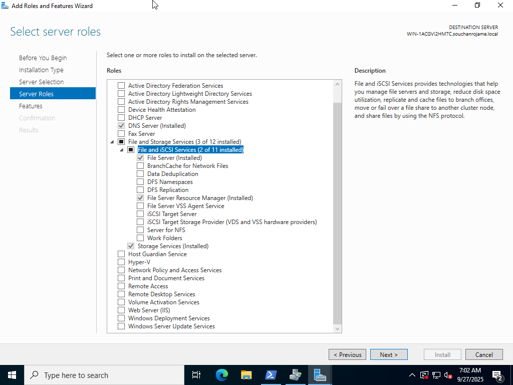

File Server
🪄 Step 1: Install the File Server Role
- Open Server Manager.
- Click Manage → Add Roles and Features.
- In the wizard:
- Click Next until you reach Server Roles.
- Expand File and Storage Services → File and iSCSI Services.
-
Check ✅ File Server.
-
Click Next → Install.
- Wait for the installation to complete, then click Close.

📁 Step 2: Create a Shared Folder
- Create a folder on a disk (e.g.,
D:\Shared). - Right-click the folder → Properties → Sharing tab.
- Click Advanced Sharing.
- Check ✅ Share this folder.
- Set Share name (e.g.,
SharedFiles). -
Click Permissions → Add users/groups or give Everyone Read/Write if needed.
-
Click OK on all dialogs.
🌐 Step 3: Access the Share from a Client
On another computer in the same network:
- Open File Explorer.
- In the address bar, type:
\\<ServerName>\SharedFiles
or by IP:
\\192.168.1.10\SharedFiles
You should now see the folder content. If prompted for credentials, enter a valid user account from the server.
🔄 Step 4 (Optional): Map a Network Drive
To make it persistent on the client machine:
- In File Explorer → This PC → Map network drive.
- Choose a drive letter, and enter:
\\<ServerName>\SharedFiles
- Check ✅ Reconnect at sign-in.
- Click Finish.